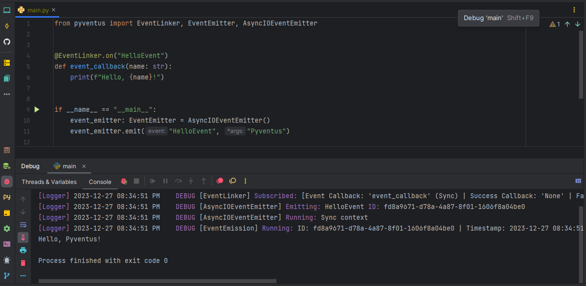

Pyventus


Documentation: https://mdapena.github.io/pyventus
Source Code: https://github.com/mdapena/pyventus
Pyventus is a powerful Python library for event-driven and reactive programming, designed to simplify the development of asynchronous and event-based applications in Python.
Key Features¶
Pyventus offers several key features, such as:
- Event-Driven & Reactive Programming ─ Whether you opt for an event-driven design or a reactive approach, Pyventus lets you select the paradigm that best fits your architecture.
- High Performance ─ Pyventus is designed from the ground up with a focus on efficiency, taking into account optimizations for time complexity, memory usage, and Python-specific features.
- Sync and Async Support ─ Whether your code is synchronous or asynchronous, Pyventus allows you to seamlessly work with both sync and async callables, as well as access its API from both contexts.
- Reliable Asynchronous Processing ─ With Pyventus, you have full control over your asynchronous workflows, allowing you to customize how they are processed upon completion, whether they succeed or encounter errors.
- Intuitive & User-Friendly API ─ Pyventus provides a user-friendly API that simplifies the process of working with event-driven and reactive paradigms, enabling you to organize your code around discrete actions and their responses.
- Comprehensive Documentation ─ Pyventus offers a comprehensive documentation suite that includes API references, usage examples, and tutorials to effectively leverage all the features and capabilities of the library.
Quick Start¶
Pyventus is published as a Python package and can be installed using pip, ideally in a virtual environment for proper dependency isolation. To get started, open up a terminal and install Pyventus with the following command:
Pyventus by default relies on the Python standard library and requires Python 3.10 or higher with no additional dependencies aside from typing-extensions, which is primarily used to support advanced typing features in older versions of Python. However, this package also includes alternative integrations to access additional features such as asynchronous processing with Redis Queue and Celery. For more information on this matter, please refer to the Optional Dependencies section.
Basic Usage¶
Let’s begin with some introductory examples that will not only illustrate the core concepts and basic usage of the library but also provide a foundation for more complex scenarios.
A Simple Event-Driven Example¶
Starting with the event-driven paradigm, let's explore the capabilities of Pyventus through a simple event-based Hello, World! example, where you will learn how to subscribe to events and emit them within your application.
| Hello, World! Example | |
|---|---|
You can also work with async functions and contexts...
| Hello, World! Example (Async version) | |
|---|---|
As we can see from the Hello, World! example, Pyventus follows a simple and intuitive workflow for defining and emitting events. Let’s recap the essential steps involved:
-
Importing Necessary Components:
We first imported the required components from the
eventsmodule of Pyventus, which included theEventLinker, theEventEmitter, and theAsyncIOEventEmitterfactory method. -
Linking Events to Callbacks:
Next, we used the
@EventLinker.on()decorator to define and link the string eventGreetEventto the functionhandle_greet_event(), which will print "Hello, World!" to the console whenever theGreetEventis emitted. -
Instantiating an Event Emitter:
After that, and in order to trigger our event, we used the
AsyncIOEventEmitterfactory method to create an instance of the event emitter class, which in this case is preconfigured with theAsyncIOProcessingService. -
Triggering the Event:
Finally, by using the
emit()method of the event emitter instance, we triggered theGreetEvent, resulting in the execution of thehandle_greet_event()callback.
Having gained a clear understanding of the workflow showcased in the Hello, World! example, you are now well-equipped to explore more intricate event-driven scenarios and fully harness the capabilities of Pyventus in your own projects. For a deep dive into the package's functionalities, you can refer to the API and Learn sections.
A Simple Reactive Example¶
Now, let's take a look at the capabilities of Pyventus within the reactive paradigm through a simple example, where you will not only learn how to define observables and stream data over time, but also how to subscribe to them.
You can also work with async functions and contexts...
As shown in the Simple Counter example, Pyventus follows a simple and intuitive workflow for defining observables and streaming data to subscribers. Let’s recap the essential steps involved:
-
Importing Necessary Components:
We first imported the required components from the
reactivemodule of Pyventus, which included the@as_observable_taskdecorator and theCompletedsignal. -
Defining Observables:
After that, and using the
@as_observable_taskdecorator in conjunction with thesimple_counter()function, we defined our observable task, which, once executed, will yield a count from one up to the specified number and raise aCompletedsignal when done. -
Instantiating Observables:
Then, we called the
simple_counter()function to instantiate the observable task, so that we can subscribe to it and control its execution as needed. -
Subscribing to Observables:
Next, we added a subscriber to the observable instance by calling its
subscribe()method and passing the corresponding callbacks. In this case, we used two lambda functions: one to print the received values and another to indicate when the observable has completed emitting values. -
Executing Observables:
Finally, and in order to initiate the execution of the observable, we called its instance, which resulted in the execution of the
simple_counter()function and the streaming of its results.
With a clear understanding of the workflow showcased in the Simple Counter example, you are now well-equipped to explore more intricate reactive scenarios and fully harness the capabilities of Pyventus in your own projects. For a deep dive into the package's functionalities, you can refer to the API and Learn sections.
Practical Examples¶
To truly see Pyventus in action, let’s explore some practical examples that will not only illustrate specific use cases of the library but also showcase its various features and demonstrate how to use them effectively.
Dynamic Voltage Monitoring: An Event-Driven Perspective¶

A common aspect found in many systems is the need to monitor and respond to changes in sensor data. Whether it involves pressure, temperature, or voltage, capturing and reacting accordingly to sensor readings is crucial for any related process.
In this practical example, we will focus on voltage sensors, where timely detection of low or high voltage conditions can prevent equipment damage and ensure system reliability. However, designing a sensor architecture that is both easy to extend and flexible can be challenging, especially if we want users to simply attach their logic without needing to understand or modify the underlying implementation. This complexity also increases if we aim for an architecture that enables a proper separation of concerns.
One way to effectively address this challenge is by implementing an event-driven architecture, where each voltage sensor encapsulates its own logic for reading values and only exposes a series of events that users can utilize to attach their domain logic. To translate this into code, we will define a VoltageSensor class that reads voltage levels and emits events based on predefined thresholds using Pyventus. The code below illustrates the implementation of this use case.
Non-Blocking HTTP Fetcher: A Responsive Approach¶
In today's interconnected world, retrieving information from the network is essential for many applications. Whether through WebSocket connections, RESTful APIs, or HTTP requests, these methods facilitate vital data exchange. However, blocking network retrievals can severely impact user experience, making it imperative for applications to remain responsive.
In this practical example, we will explore the design and implementation of a non-blocking HTTP getter function, along with its integration into a console-style application that mimics the behavior of a simplified web browser. While there are various mechanisms for implementing non-blocking HTTP fetchers, such as Python threads or the asyncio library, we will leverage the reactive paradigm of Pyventus due to its readability, declarative style, and ease of implementation.
To accomplish this, we will first define a basic blocking HTTP function called http_get(). This function will then be transformed into an observable using the @as_observable_task decorator from Pyventus, allowing us to attach subscribers for result notifications. Finally, we will utilize the ThreadPoolExecutor for concurrent execution of the observables, enabling us to handle multiple requests seamlessly while maintaining an interactive user experience.
Event-Driven Programming: Key Highlights of Pyventus¶
Alongside the standard functionalities of event-driven programming, Pyventus also introduces some unique aspects that set it apart from other implementations. In this section, we will cover some of these key features and how to use them effectively.
-
Event Objects ─ Besides supporting string-based events, as we've seen in previous examples, Pyventus also supports Event Objects, which provide a structured way to define events and encapsulate relevant data payloads.
-
Global Events ─ In addition to Event Objects and string-based events, Pyventus also provides support for global events, which are particularly useful for implementing cross-cutting concerns such as logging, monitoring, and analytics. By subscribing event callbacks to
..., you can capture all events that may occur within that specificEventLinkercontext. -
Success and Error Handling ─ With Pyventus, you can customize how events are handled upon completion, whether they succeed or encounter errors. This customization is achieved through the configuration of the success and failure callbacks in the event workflow definition, which is done during the subscription process.
You can also set up your callbacks using the
subscribe()method...Alternatively, for more straightforward definitions, such as lambda functions, or when you have existing functions defined elsewhere in your code, you can utilize the
subscribe()method to set up these callbacks. -
Sync and Async Support ─ Pyventus is designed from the ground up to seamlessly support both synchronous and asynchronous programming models. Its unified sync/async API allows you to define event callbacks as either
syncorasynccallables, as well as emit events from both contexts.You can optimize the execution of your callbacks based on their workload...
By default, event subscribers in Pyventus are executed concurrently during an event emission, running their
syncandasynccallbacks as defined. However, if you have asynccallback that involves I/O or non-CPU bound operations, you can enable theforce_asyncparameter to offload it to a thread pool, ensuring optimal performance and responsiveness. The offloading process is handled by theasyncio.to_thread()function.Considerations on the processing of event emissions...
It's important to note that, while Pyventus provides a unified sync/async API, the processing of each event emission will depend on the concrete implementation of the
ProcessingServiceused in the event emitter. For example, an event emitter configured with theAsyncIOProcessingServicewill leverage theAsyncIOframework to handle the execution of the event emission, whereas other implementations may structure their propagation differently. -
Runtime Flexibility ─ At its core, Pyventus utilizes a modular event emitter design that, along with the
EventLinker, allows you to change the event emitter at runtime without needing to reconfigure all subscriptions or apply complex logic.
Reactive Programming: Key Highlights of Pyventus¶
In addition to the standard functionalities of reactive programming, Pyventus also provides some unique aspects that set it apart from other implementations. In this section, we will explore some of these key features and how to use them effectively.
-
Python Callables as Observable Tasks ─ Whether you are working with generators or regular functions, Pyventus allows you to easily convert any Python callable into an observable task. These tasks are specialized observables that encapsulate a unit of work and provide a mechanism for streaming their results to a series of subscribers.
You can also work with
asyncfunctions...You can also work with
asyncgenerators... -
Multicast Support ─ Observables in Pyventus are designed from the ground up to efficiently support both unicast and multicast scenarios. So, it doesn't matter if you need to work with either single or multiple subscribers; Pyventus allows you to utilize these notification models and even optimizes the processing of each to ensure optimal performance.
-
Success and Error Handling ─ With Pyventus, you can customize how data streams are handled upon completion, whether they succeed or encounter errors. This customization is achieved through the configuration of the complete and error callbacks in the observer definition, which is done during the subscription process.
-
Declarative Subscription Model ─ Alongside standard subscription models, such as using lambda functions or predefined callbacks, Pyventus also provides a declarative subscription model that allows you to not only define the observer's callbacks inline and in a step-by-step manner but also to do so right before the subscription takes place.
You can also use the
subscribe()method as a decorator...The
subscribe()method, besides being used as a regular function and a context manager, can also be utilized as a decorator. When used this way, it creates and subscribes an observer, using the decorated function as its next callback. -
Simplified Execution for Observable Tasks ─ Having to explicitly call each observable task to initiate their execution can be tedious and easily overlooked, especially when working with multiple observables at the same time. However, by using observable tasks within a
withstatement block, you can avoid this manual work and enable what is known as their execution context, which will allow you to work with them as usual while ensuring that they are called upon exiting the context block. -
Thread Offloading for Observable Tasks ─ By default, the processing of each observable task is handled by the AsyncIO framework, either synchronously or asynchronously depending on the context. However, for multithreaded environments, Pyventus also provides support for running these observable tasks in separate threads.
Thread offloading is also available for the execution context of observable tasks...
Additional Highlights¶
Beyond the core functionalities of event-driven and reactive programming, Pyventus also includes some additional features that are worth noting. In this section, we will explore these aspects and how to use them effectively.
-
Debugging Utilities ─ Debugging plays a crucial role in the development of asynchronous and event-driven applications, as it allows you to understand what’s going on under the hood and provides valuable insights when troubleshooting errors. For this reason, Pyventus offers a clear string representation of each component, along with a debug mode flag that lets you view the package's logs for a better understanding of the processes at work.

-
Efficient Import Management ─ Pyventus encapsulates each paradigm into its own isolated package, so that you can not only have a clear boundary between event-driven and reactive programming features, but also apply Python import optimizations based on the required paradigm. For example, if you are only working with the events module of Pyventus and never import the reactive package, Python does not load it.
License¶
Pyventus is distributed as open-source software and is released under the MIT License. For a detailed view of the license, please refer to the LICENSE file located in the Pyventus repository.